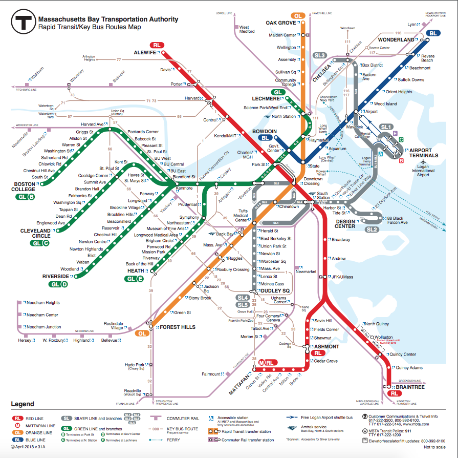
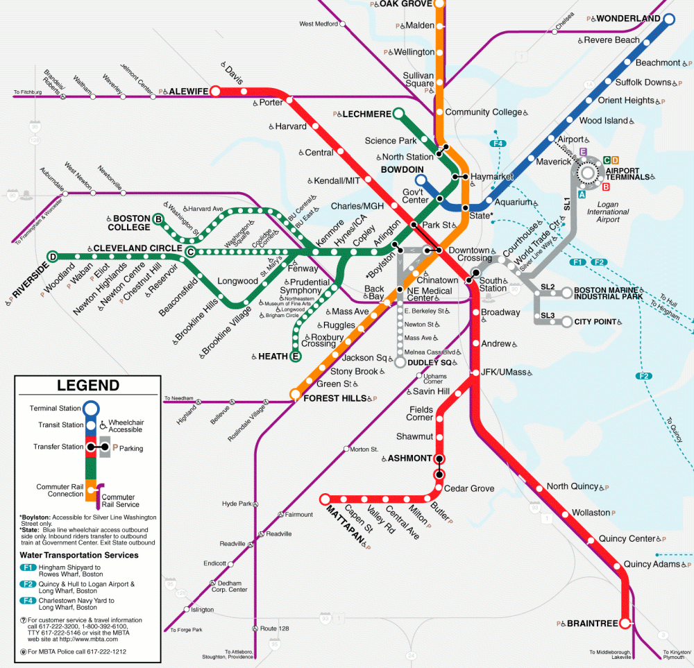
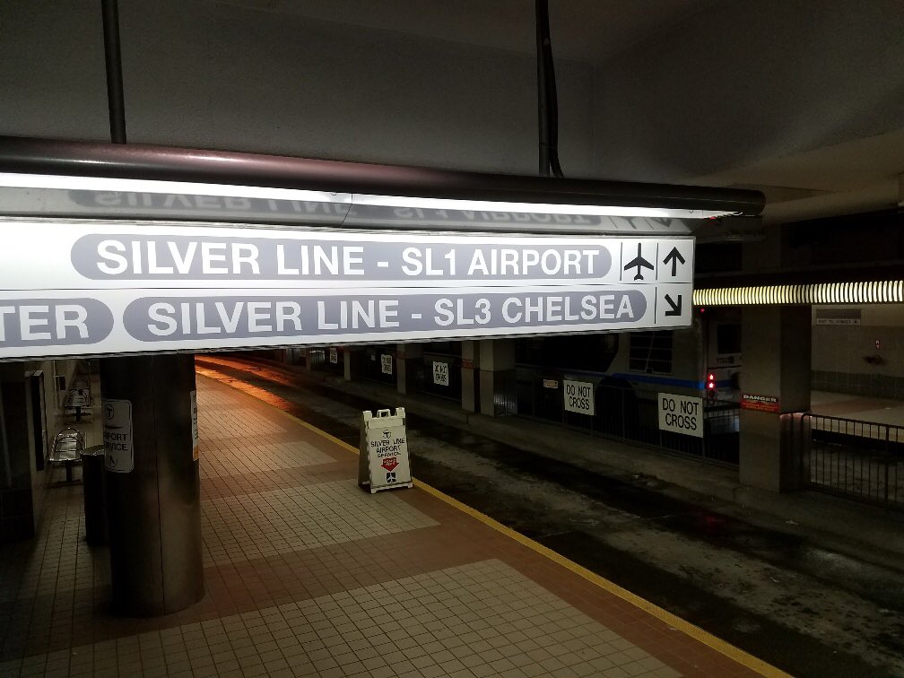
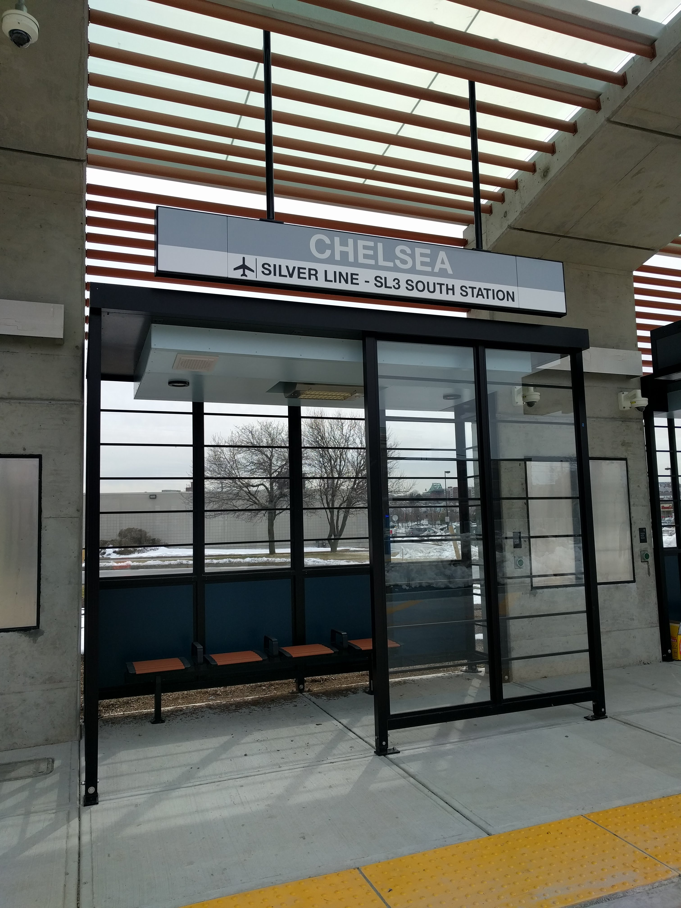

Please note: This story is subject to change with the opening of the line.

The new Silver Line, SL3, will launch on April 21st, 2018. This new line
will service Chelsea. New stations include Chelsea, Bellingham Square,
Box District, and Eastern Ave. Also, Airport Station on the Blue Line is
now also on SL3, making the blue line connected to the Silver Line. The map,
pictured below, shows SL3 on the MBTA subway map. It extends from the SL1
route, going north to Clesea. It also runs to South Station, serving Courthouse
World Trade Center, and Silver Line Way Stations.
To service the route, five new electic buses have been added. These new buses
will be used exclusively on the Silver Line, and probably on most Silver Line
routes.
Service will begin on Saturday, April 21st, 2018. On weekdays, buses will run
about every ten minutes inbound and outbound for the morning commute, every 15
minutes in the mid-day, and 12 minutes or less for the afternoon commute to
close. On Saturdays, buses will run every 12 minutes before midnight, and every
15 minutes from midnight till 1:47am. On Sundays, buses will run every 15 minutes
throughout the day.

The name "SL3" was reappropriated from the original SL3, which operated in
2004. This service ended in 2005, but was brought back two months later. This
older SL3 route went to City Point via the Boston Marine Industrial Park.
After the Route 7 bus gained popularity, the SL3 bus was discontinued in 2009,
and has not since returned. A map containing the old route is imaged below.
The MBTA predicts 8,700 customers per day using SL3. They're planning on using
seven vehicles at most on the line. They're also running the SL3 service through
bus-only lanes: concrete roadways that only buses are allowed to operate on. All
new stations are accessible, continuing the trend of all accessible Silver Line
stations.
As mentioned before, this service required four newly built stations. These new
stations are simple structures with benches. They're above ground, and have roofs
for protection from the rain.
Please see below for images of SL3.

